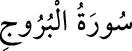

85- el-BÜRÛC SÛRESİ
Şems sûresinden sonra Mekke’de inmiştir; 22 âyettir. «Bürûc», burc kelimesinin
çoğuludur. Sûrede burçları olan gökyüzüne, kıyamet gününe ve o güne tanıklık
edecek olanlarla, yine o gün müşâhede edilecek olaylara yemin edildikten sonra
Yemen’de geçmiş bir olaya temas edilir: Yahudi Zûnuvas ve adamları, yahudiliği
kabul etmeyen Necran hıristiyanlarını, Hendek içinde yakılmış bir ateşe atarak
yakarlar ve yanmakta olan insanları seyrederler. Bu şekilde işkence ile yakılıp
öldürülen kimseler inançları uğrunda ölmüşlerdir.